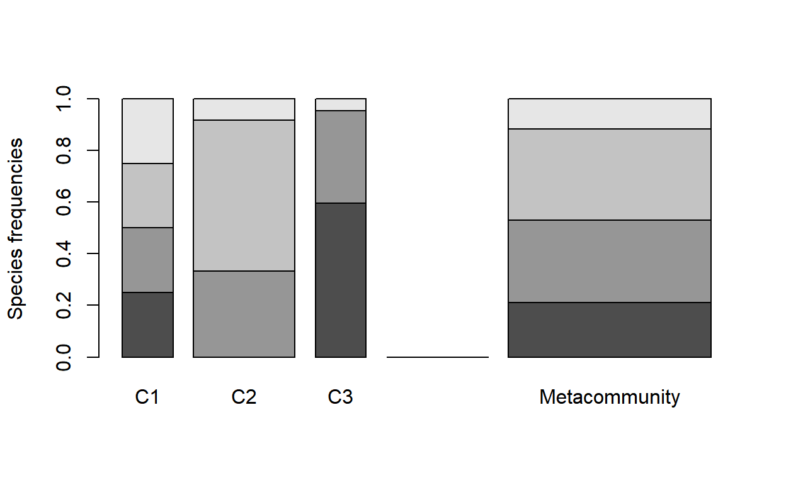
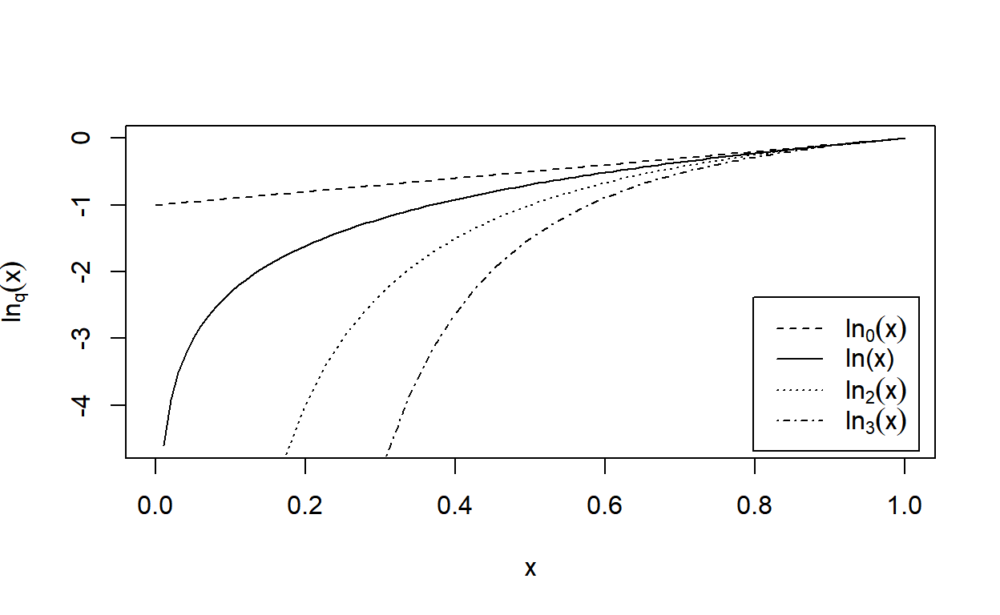
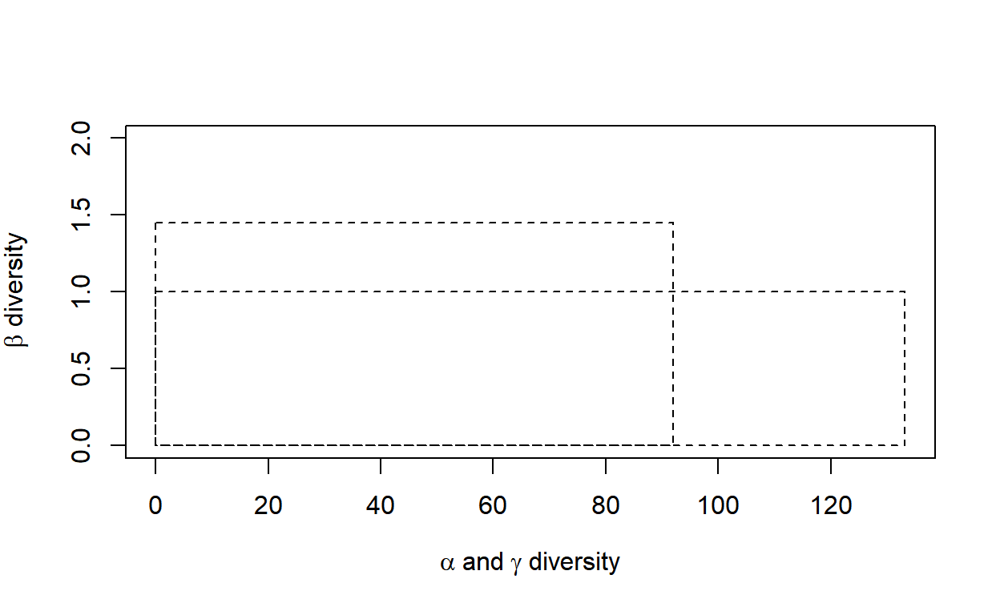
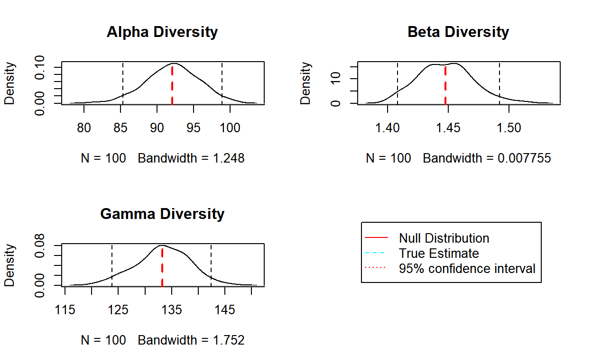
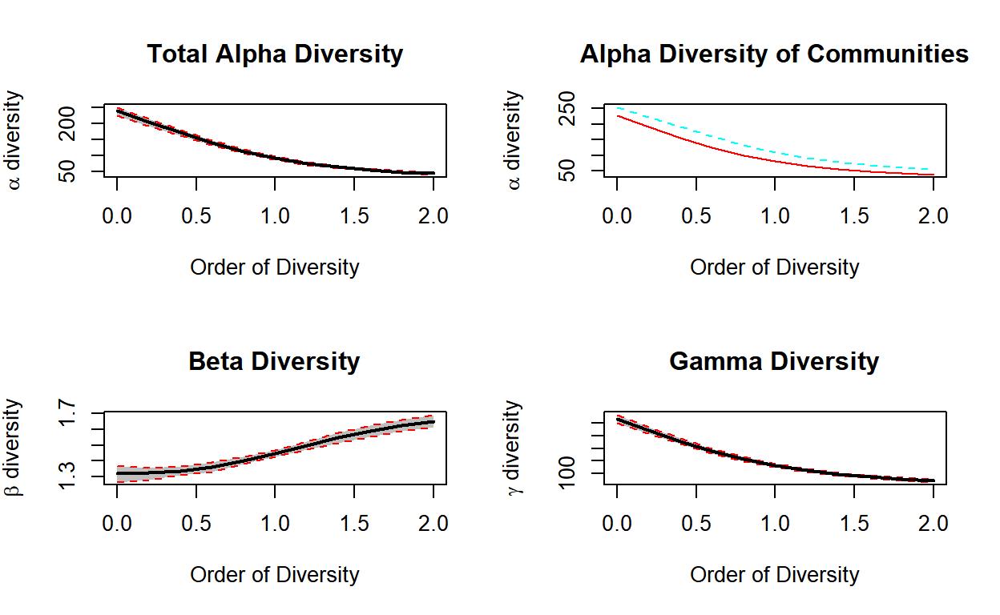
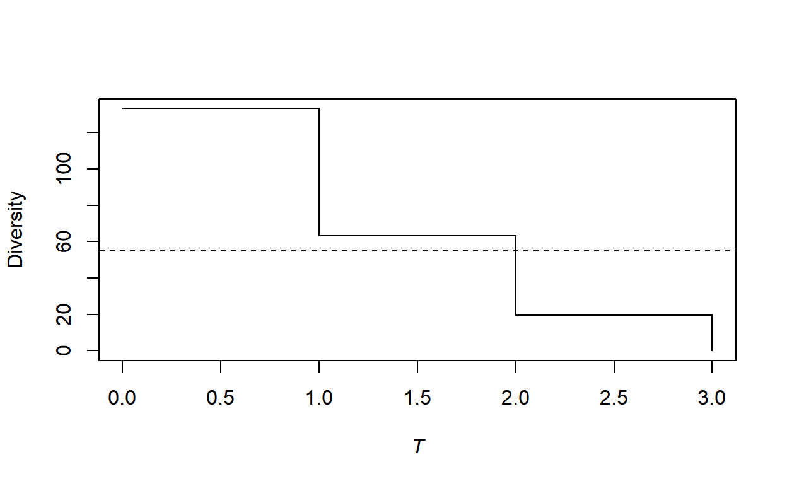
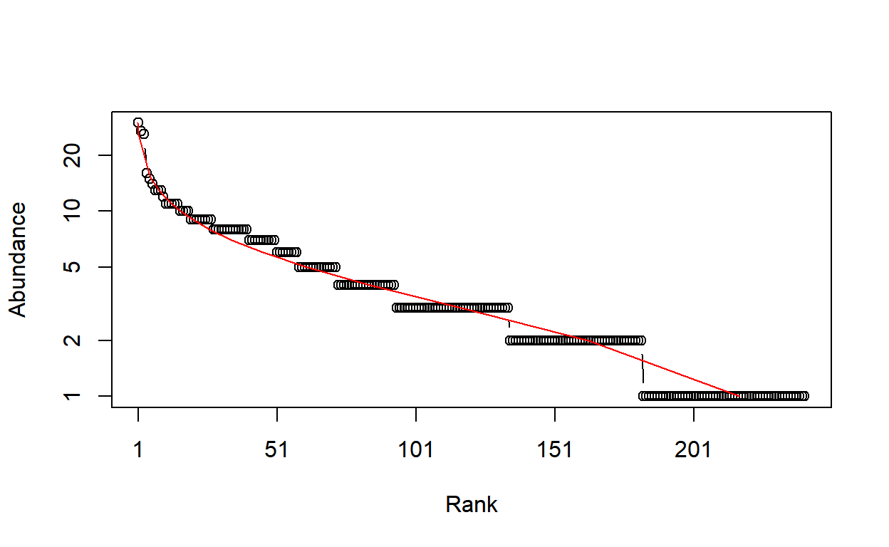
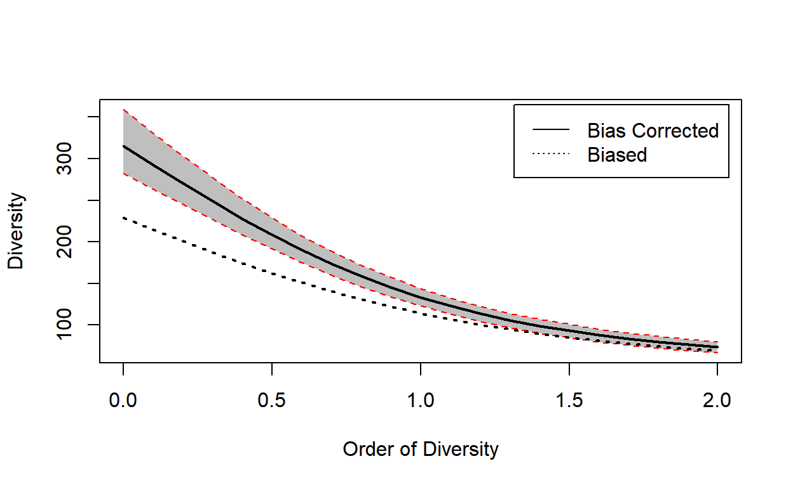

entropart is a package for R designed to estimate diversity based on HCDT entropy or similarity-based entropy. A short introduction to its use is in the first section of this vignette (Introduction). The second section is the reference guide and the last one focuses on the plylogenetic tree formats used in the package.
Introduction
The entropart package allows estimating biodiversity according to the framework based on HCDT entropy, the correction of its estimation-bias (Grassberger 1988; Chao and Shen 2003; Chao and Jost 2015) and its transformation into equivalent numbers of species (Hill 1973; Jost 2006; Marcon et al. 2014).
Phylogenetic or functional diversity (Marcon and Hérault 2015) can be estimated, considering phyloentropy as the average species-neutral diversity over slices of a phylogenetic or functional tree (S. Pavoine, Love, and Bonsall 2009).
Similarity-based diversity (Leinster and Cobbold 2012) can be used to estimate (Marcon, Zhang, and Hérault 2014) functional diversity from a similarity or dissimilarity matrix between species without requiring building a dendrogram and thus preserving the topology of species (Sandrine Pavoine, Ollier, and Dufour 2005; Podani and Schmera 2007).
The classical diversity estimators (Shannon and Simpson entropy) can be found in many R packages. vegetarian (Charney and Record 2009) allows calculating Hill numbers and partitioning them according to Jost’s framework. Bias correction is never available except in the EntropyEstimation (Cao and Grabchak 2014) package which provides the Zhang and Grabchak’s estimators of entropy and diversity and their asymptotic variance (not included in entropart).
Estimating the diversity of a community
Community data
Community data is a numeric vector containing abundances of species (the number of individual of each species) or their probabilities (the proportion of individuals of each species, summing to 1).
Example data is provided in the dataset paracou618. Let’s get the abundances of tree species in the 1-ha tropical forest plot #18 from Paracou forest station in French Guiana:
library("entropart")
data("Paracou618")
N18 <- Paracou618.MC$Nsi[, "P018"]The data in Paracou618.MC is a MetaCommunity, to be discovered later. N18 is a vector containing the abundances of 425 tree species, among them some zero values. This is the most simple and common format to provide data to estimate diversity. It can be used directly by the functions presented here, but it may be declared explicitely as an abundance vector to plot it, and possibly fit a well-known, e.g. log-normal (Preston 1948), distribution of species abundance (the red curve):
Abd18 <- as.AbdVector(N18)
plot(Abd18, Distribution="lnorm")
$mu
[1] 0.6843775
$sigma
[1] 0.8568455The parameters of the fitted distribution (here: mean and standard deviation) are returned by the function.
Abundance vectors can also be converted to probability vectors, summing to 1:
P18 <- as.ProbaVector(N18)The rCommunity function allows drawing random communities:
rc <- rCommunity(1, size=10000, Distribution = "lseries", alpha = 30)
plot(rc, Distribution="lseries")
$alpha
[1] 30.17299The Whittaker plot of a random log-series (Fisher, Corbet, and Williams 1943) distribution of 10000 individuals simulated with parameter \(\alpha=30\) is produced.
Diversity estimation
The classical indices of diversity are richness (the number of species), Shannon’s and Simpson’s entropies:
Richness(P18)None
149 Shannon(P18) None
4.421358 Simpson(P18) None
0.9794563 When applied to a probability vector (created with as.ProbaVector or a numeric vector summing to 1), no estimation-bias correction is applied: this means that indices are just calculated by applying their definition function to the probabilities (that is the plugin estimator).
When abundances are available (a numeric vector of integer values or an object created by as.ProbaVector), several estimators are available (Marcon 2015) to address unobserved species and the non-linearity of the indices:
Richness(Abd18) Chao1
254.0888 Shannon(Abd18)ChaoWangJost
4.70651 Simpson(Abd18) Lande
0.9814969 The best available estimator is chosen by default: its name is returned.
Those indices are special cases of the Tsallis entropy (1988) or order \(q\) (respectively \(q=0,1,2\) for richness, Shannon, Simpson):
Tsallis(Abd18,q=1)ChaoWangJost
4.70651 Entropy should be converted to its effective number of species, i.e. the number of species with equal probabilities that would yield the observed entropy, called Hill (1973) numbers or simply diversity (Jost 2006).
Diversity(Abd18,q=1)ChaoWangJost
110.6652 Diversity is the deformed exponential of order \(q\) of entropy, and entropy is the deformed logarithm of of order \(q\) of diversity:
(d2 <- Diversity(Abd18,q=2))ChaoWangJost
54.04494 lnq(d2, q=2)ChaoWangJost
0.9814969 (e2 <-Tsallis(Abd18,q=2))ChaoWangJost
0.9814969 expq(e2, q=2)ChaoWangJost
54.04494 Diversity can be plotted against its order to provide a diversity profile. Order 0 corresponds to richness, 1 to Shannon’s and 2 to Simpson’s diversities:
DP <- CommunityProfile(Diversity, Abd18)
plot(DP)
If an ultrametric dendrogram describing species’ phylogeny (here, a mere taxonomy with family, genus and species) is available, phylogenetic entropy and diversity (Marcon and Hérault 2015) can be calculated:
summary(PhyloDiversity(Abd18,q=1,Tree=Paracou618.Taxonomy))alpha or gamma phylogenetic or functional diversity of order 1
of distribution -
with correction: Best
Phylogenetic or functional diversity was calculated according to the tree
Paracou618.Taxonomy
Diversity is normalized
Diversity equals: 51.98951With a Euclidian distance matrix between species, similarity-based diversity (Leinster and Cobbold 2012; Marcon, Zhang, and Hérault 2014) is available:
# Prepare the similarity matrix
DistanceMatrix <- as.matrix(Paracou618.dist)
# Similarity can be 1 minus normalized distances between species
Z <- 1 - DistanceMatrix/max(DistanceMatrix)
# Calculate diversity of order 2
Dqz(Abd18, q=2, Z) Best
1.477898 Profiles of phylogenetic diversity and similarity-based diversity are obtained the same way. PhyloDiversity is an object with a lot of information so an intermediate function is necessary to extract its $Total component:
sbDP <- CommunityProfile(Dqz, Abd18, Z=Z)
pDP <- CommunityProfile(function(X, ...) PhyloDiversity(X, ...)$Total, Abd18, Tree=Paracou618.Taxonomy)
plot(pDP)
Estimating the diversity of a meta-community
Meta-community data
A meta-community is an object defined by the package. It is a set of communities, each of them decribed by the abundance of their species and their weight. Species probabilities in the meta-community are by definition the weighted average of their probabilities in the communities.
The easiest way to build a meta-community consists of preparing a dataframe whose columns are communities and lines are species, and define weights in a vector (by default, all weights are equal):
library("entropart")
(df <- data.frame(C1 = c(10, 10, 10, 10), C2 = c(0, 20, 35, 5), C3 = c(25, 15, 0, 2), row.names = c("sp1", "sp2", "sp3", "sp4"))) C1 C2 C3
sp1 10 0 25
sp2 10 20 15
sp3 10 35 0
sp4 10 5 2w <- c(1, 2, 1)The MetaCommunity function creates the meta-community. It can be plotted:
MC <- MetaCommunity(Abundances = df, Weights = w)
plot(MC)
Each shade of grey represents a species. Heights correspond to the probability of species and the width of each community is its weight.
Paracou618.MC is an example meta-community provided by the package. It is made of two 1-ha communities (plots #6 and #18) of tropical forest.
Diversity estimation
High level functions allow computing diversity of all communities (\(\alpha\) diversity), of the meta-community (\(\gamma\) diversity), and \(\beta\) diversity, i.e. the number of effective communities (the number of communities with equal weights and no common species that would yield the observed \(\beta\) diversity).
The DivPart function calculates everything at once, for a given order of diversity \(q\):
p <- DivPart(q = 1, MC = Paracou618.MC)
summary(p)HCDT diversity partitioning of order 1 of metaCommunity Paracou618.MC
Alpha diversity of communities:
P006 P018
66.00455 83.20917
Total alpha diversity of the communities:
[1] 72.88247
Beta diversity of the communities:
None
1.563888
Gamma diversity of the metacommunity:
None
113.98 The \(\alpha\) diversity of communities is 73 effective species. \(\gamma\) diversity of the meta-community is 114 effective species. \(\beta\) diversity is 1.56 effective communities, i.e. the two actual communities are as different from each other as 1.56 ones with equal weights and no species in common.
The DivEst function decomposes diversity and estimates confidence interval of \(\alpha\), \(\beta\) and \(\gamma\) diversity following Marcon et al. (2012). If the observed species frequencies of a community are assumed to be a realization of a multinomial distribution, they can be drawn again to obtain a distribution of entropy.
de <- DivEst(q = 1, Paracou618.MC, Simulations = 100)===========================================================================plot(de)
The result is a Divest object which can be summarized and plotted.
DivProfile calculates diversity profiles. The result is a DivProfile object which can be summarized and plotted.
dp <- DivProfile(, Paracou618.MC)
plot(dp)
Plot #18 can be considered more diverse than plot #6 because their profiles (top right figure, plot #18 is the dotted red line, plot #6, the solid black one) do not cross (Tothmeresz 1995): its diversity is systematically higher. The shape of the \(\beta\) diversity profile shows that the communities are more diverse when their dominant species are considered.
The bootstrap confidence intervals of the values of diversity (Marcon et al. 2012; Marcon et al. 2014) are calculated if NumberOfSimulations is not 0.
DivPart, DivEst and DivProfile use plugin estimators by default. To force them to apply the same estimators as community functions, the argument Biased = FALSE must be entered. They compute Tsallis entropy and Hill numbers by default. A dendrogram in the argument Tree or a similarity matrix in the argument Z will make them calculate phylogenetic diversity or similarity-based diversity.
Reference guide
Diversity measurement can be done through a quite rigorous framework based on entropy, i.e. the amount of uncertainty calculated from the frequency distribution of a community (Patil and Taillie 1982; Jost 2006; Marcon et al. 2014). Tsallis entropy, also known as HCDT entropy (Havrda and Charvát 1967; Daróczy 1970; Tsallis 1988), is of particular interest (Jost 2006; Marcon et al. 2014) namely because it gathers the number of species, Shannon (1948) and Simpson (1949) indices of diversity into a single framework. Interpretation of entropy is not straightforward but one can easily transform it into Hill numbers (Hill 1973) which have many desirable properties (Jost 2007): mainly, they are the number of equally-frequent species that would give the same level of diversity as the data.
Marcon and Hérault (2015) generalized the duality of entropy and diversity, deriving the relation between phylogenetic or functional diversity (Chao, Chiu, and Jost 2010) and phylogenetic or functional entropy (we will write phylodiversity and phyloentropy for short), as introduced by S. Pavoine, Love, and Bonsall (2009). Special cases are the well-known PD (Faith 1992) and FD (Petchey and Gaston 2002) indices and Rao’s (1982) quadratic entropy. The same relation holds between Ricotta and Szeidl’s entropy of a community (Ricotta and Szeidl 2006) and similarity-based diversity (Leinster and Cobbold 2012).
The entropart package for R (R Core Team 2018) enables calculation of all these measures of diversity and entropy and their partitioning.
Diversity partitioning means that, in a given area, the \(\gamma\) diversity \(D_{\gamma}\) of all individuals found may be split into within (\(\alpha\) diversity, \(D_{\alpha}\)) and between (\(\beta\) diversity, \(D_{\beta}\)) local assemblages. \(\alpha\) diversity reflects the diversity of individuals in local assemblages whereas \(\beta\) diversity reflects the diversity of the local assemblages. Marcon et al. (2014) derived the decomposition of Tsallis \(\gamma\) entropy into its \(\alpha\) and \(\beta\) components, generalized to phylodiversity (Marcon and Hérault 2015) and similarity-based diversity (Marcon, Zhang, and Hérault 2014).
Estimators of diversity are biased because of unseen species and also because they are not linear functions of probabilities (Marcon et al. 2014). \(\alpha\) and \(\gamma\) diversities are underestimated by naive estimators (Chao and Shen 2003; Dauby and Hardy 2012). \(\beta\) diversity is severely biased too when sampling is not sufficient (Beck, Holloway, and Schwanghart 2013). Bias-corrected estimators of phylodiversity have been developed by Marcon and Hérault (2015). Estimators of similarity-based diversity were derived by Marcon, Zhang, and Hérault (2014). The package includes them all (Marcon and Hérault 2015).
In summary, the framework supported by the package is as follows. First, an information function is chosen to describe the amount of surprise brought by the observation of each individual. In the simplest case of species-neutral diversity, it is just a decreasing function of probability: observing an individual of a rarer species brings more surprise. Various information functions allow evaluating species-neutral, phylogenetic or functional entropy. Surprise is averaged among all individuals of a community to obtain its entropy. Entropy is systematically transformed into diversity for interpretation. Diversity is an effective number of species, i.e. the number of equally-different and equally-frequent species that would give the same entropy as the data. The average entropy of communities of an assemblage is \(\alpha\) entropy, while the entropy of the assemblage is \(\gamma\) entropy. Their difference is \(\beta\) entropy. After transformation, \(\beta\) diversity is the ratio of \(\gamma\) to \(\alpha\) diversity. It is an effective number of communities, i.e. the number of equally-weighted communities with no species in common (and where species are maximally distinct between communities) necessary to obtain the same diversity as the data. Estimation-bias correction is more easily applied to entropy before transforming it into diversity.
This framework is somehow different from that of Chao, Chiu, and Jost (2014) who define \(\alpha\) diversity in another way (see Marcon and Hérault 2015 for a detailed comparison), such that \(\alpha\) entropy is not the average surprise of an assemblage. They also propose a definition of functional diversity (Chiu and Chao 2014) based in the information brought by pairs of individuals that is not supported in the package.
The successive sections of this paper presents the package features, illustrated by worked examples based on the data included in the package.
Package organization
Data
Most functions of the package calculate entropy or diversity of a community or of an assemblage of communities called a meta-community. Community functions accept a vector of probabilities or of abundances for species data. Each element of the vector contains the probability or the number of occurrences of a species in a given community. Meta-community functions require a particular data organization in a MetaCommunity object described here.
A MetaCommunity is basically a list. Its main components are $Nsi, a matrix containing the species abundances whose lines are species, columns are communities and $Wi, a vector containing community weights. Creating a MetaCommunity object is the purpose of the MetaCommunity function. Arguments are a dataframe containing the number of individuals per species (lines) in each community (columns), and a vector containing the community weights. The following example creates a MetaCommunity made of three communities of unequal weights with 4 species. The weighted average probabilities of occurrence of species and the total number of individuals define the meta-community as the assemblage of communities.
df <- data.frame(C1=c(10, 10, 10, 10), C2=c(0, 20, 35, 5), C3=c(25, 15, 0, 2))
row.names(df) <- c("sp1", "sp2", "sp3", "sp4")
df C1 C2 C3
sp1 10 0 25
sp2 10 20 15
sp3 10 35 0
sp4 10 5 2w <- c(1, 2, 1)
MC <- MetaCommunity(Abundances=df, Weights=w)
plot(MC)
Communities (named C1, C2 ad C3) are represented in the left part of the figure, the metacommunity to the right. Bar widths are proportional to community weights. Species abundances are represented vertically (4 species are present in the meta-community, only 3 of them in communities C2 and C3).
A meta-community is partitioned into several local communities (indexed by \(i=1, 2,\dots, I\)). \(n_i\) individuals are sampled in community \(i\). Let \(s=1,\ 2,\dots ,S\) denote the species that compose the meta-community, \(n_{s,i}\) the number of individuals of species \(s\) sampled in the local community \(i\), \(n_s=\sum_i{n_{s,i}}\) the total number of individuals of species \(s\), \(n=\sum_s{\sum_i{n_{s,i}}}\) the total number of sampled individuals. Within each community \(i\), the probability \(p_{s,i}\) for an individual to belong to species \(s\) is estimated by \(\hat{p}_{s,i}=n_{s,i}/{n_i}\). The same probability for the meta-community is \(p_s\).
Communities have a weight \(w_i\), satisfying \(p_s=\sum_i{w_i p_{s,i}}\). The commonly-used \(w_i=n_i/n\) is a possible weight, but the weighting may be arbitrary (e.g. the sampled areas). The component $Ps of a MetaCommunity object contains the probability of occurrence of each species in the meta-community, calculated this way:
MC$Ps sp1 sp2 sp3 sp4
0.2113095 0.3184524 0.3541667 0.1160714 The number of individuals $Ns of a MetaCommunity is theoretically unknown, since communities are just samples of it. The total number of individuals is $N. For simplicity, it is set to the total number of individuals of all communities. If community weights are their number of individuals, $Ns is just the sum of the numbers of individuals per species of communities. Else, $Ns may contain non-integer values, respecting the probabilities $Ps and summing to $N.
A MetaCommunity can be summarized and plotted.
The package contains an example dataset containing the inventory of two 1-ha tropical forest plots in Paracou, French Guiana (Marcon et al. 2012):
data("Paracou618")
summary(Paracou618.MC)Meta-community (class 'MetaCommunity') made of 1124 individuals in 2
communities and 425 species.
Its sample coverage is 0.92266748426447
Community weights are:
[1] 0.5720641 0.4279359
Community sample numbers of individuals are:
P006 P018
643 481
Community sample coverages are:
P006 P018
0.8943859 0.8463782 Paracou618.MC is a meta-community made of two communities named P006 and P018, containing 425 species (their name is Family_Genus_Species, abbreviated to 4 characters). The values of the abundance matrix are the number of individuals of each species in each community. Sample coverage will be explained later.
The dataset also contains a taxonomy and a functional tree. Paracou618.Taxonomy is an object of class phylo, defined in the package ape (Paradis, Claude, and Strimmer 2004), namely a phylogenetic tree. This example data is only a taxonomy, containing family, genus and species levels for the sake of simplicity. Paracou618.Functional is an object of class hclust containing a functional tree based on leaf, height, stem and seed functional traits (Hérault and Honnay 2007; Marcon and Hérault 2015). The package also accepts any ultrametric tree of class phylog, from ade4 (Dray and Dufour 2007) or hclust. Paracou618.dist is the distance matrix (actually a dist object) used to build the functional tree.
Numeric vectors containing species abundances (such as the $Ns component of MetaCommunity) or probabilities (such as $Ps) may be converted to abundance vectors (AbdVector) or probability vectors (ProbaVector) to clarify their content. By default, the as.AbdVector function transforms abundance values into integer if they are not (the $Ns components of a MetaCommunity is typically not an integer vector if community weights are not proportional to their numbers of individuals):
data("Paracou618")
PAbd <- as.AbdVector(Paracou618.MC$Ns)
plot(PAbd)
the Paracou species distribution is plotted as a Rank-Abundance Curve (Whittaker plot).
The as.ProbaVector function transforms abundances to probabilities if necessary:
PProba <- as.ProbaVector(Paracou618.MC$Ps)AbdVector and ProbaVector objects both are SpeciesDistribution objects which can be plotted.
Utilities
The deformed logarithm formalism (Tsallis 1994) is very convenient to manipulate entropies. The deformed logarithm of order \(q\) is defined as:
\[\ln_q{x}=\frac{x^{1-q}-1}{1-q}\]
It converges to \(\ln\) when \(q\to 1\).
curve(log(x), 0, 1, lty=1, ylab = expression(ln[q](x)))
curve(lnq(x, 0), 0, 1, lty = 2, add = TRUE)
curve(lnq(x, 2), 0, 1, lty = 3, add = TRUE)
curve(lnq(x, 3), 0, 1, lty = 4, add = TRUE)
legend("bottomright", legend = c(expression(ln[0](x)), "ln(x)", expression(ln[2](x)), expression(ln[3](x))), lty = c(2, 1, 3, 4), inset= 0.02)
The figure shows the curves of \(\ln_q{x}\) for different values of \(q\) between 0 and 4 (\(\ln_1{x}=\ln{x}\)).
The inverse function of \(\ln_q{x}\) is the deformed exponential:
\[e^x_q=[1+(1-q)x]^{\frac{1}{1-q}}\]
Functions of the package are lnq(x, q) and expq(x, q).
Species-neutral diversity
Community functions
HCDT entropy
Species-neutral HCDT entropy of order \(q\) of a community is defined as:
\[^q\!H=\frac{1-\sum_s{p^q_s}}{q-1}=-\sum_s{p^q_s}\ln_q{p_s}=\sum_s{p_s}\ln_q{\frac{1}{p_s}}\]
\(q\) is the order of diversity (e.g.: 1 for Shannon). Entropy can be calculated by the Tsallis function. Paracou meta-community entropy of order 1 is:
Tsallis(PProba, q = 1) None
4.736023 For convenience, special cases of entropy of order \(q\) have a clear-name function: Richess for \(q=0\), Shannon for \(q=1\), Simpson for \(q=2\).
Shannon(PProba) None
4.736023 Entropy values have no intuitive interpretation in general, except for the number of species \(^0\!H\) and Simpson entropy \(^2\!H\) which is the probability for two randomly chosen individuals to belong to different species.
Sample coverage
A useful indicator of sampling quality is the sample coverage (Good 1953; Chao, Lee, and Chen 1988; Zhang and Huang 2007), that is to say the probability for a species of the community to be observed in the actual sample. It equals the sum of the probability of occurrences of all observed species. Its historical estimator is (Good 1953):
\[\hat{C}=1-\frac{S^1}{n}\]
\(S^1\) is the number of singletons (species observed once) of the sample, and \(n\) is its size. The estimator has been improved by taking into account the whole distribution of species (Zhang and Huang 2007). The Coverage function calculates it, allowing to choose the estimator:
Coverage(PAbd)ZhangHuang
0.9226675 The sample coverage cannot be estimated from probability data: abundances are required.
Its interpretation is straightforward: some species have not been sampled. Their number is unknown but their total probability of occurence can be estimated accurately. Here, it is a bit less than 8%. From another point of view, the probability for an individual of the community to belong to a sampled species is \(C\): 8% of them belong to missed species. The number of missed species may be estimated by Richness but this is not the point here. The sample coverage is the foundation of many estimators of entropy.
Bias corrected estimators
Correction of estimation bias is used to improve the estimation of entropy despite unobserved species and also mathematical issues (Bonachela, Hinrichsen, and Muñoz 2008). Bias-corrected estimators (often relying on sample coverage) are returned by functions whose names are prefixed by bc, such as bcTsallis. They are similar to the non-corrected ones but they use abundance data and propose several bias-correction techniques to select in the Correction argument. A Best correction is calculated by default, detailed in the help file of each function.
bcTsallis(PAbd, q = 1)ChaoWangJost
4.892159 The best correction for Tsallis entropy follows Chao and Jost (2015). It combines an unbiased estimator previously derived by Zhang and Grabchak (2016) and an estimate of the remaining bias.
All community functions such as Tsallis are actually generic methods that can handle several types of data the appropriate way: if the first argument of the function is a ProbaVector (or a numeric vector summing to 1), no bias correction is applied. If it is an AbdVector (or an integer vector), the bias-corrected estimator is used (e.g. bcTsallis). Numeric vectors summing to more than 2 are considered as abundances but most bias corrections do not allow non-integer values and return a warning.
The different ways to use the functions are a matter of personal preference. bcTsallis is equivalent to Tsallis with an abundance vector:
Tsallis(PAbd, q = 1)ChaoWangJost
4.892159 whilst Tsallis with a probability vector does not allow bias correction:
Tsallis(PProba, q = 1) None
4.736023 Bias-corrected entropy is ready to be transformed into explicit diversity.
Effective numbers of species
Entropy should be converted into true diversity (Jost 2007), i.e. effective number of species equal to Hill (1973) numbers:
\[^q\!D={\left(\sum_s{p^q_s}\right)}^{\frac{1}{1-q}}\]
This can be done by the deformed exponential function, or using directly the Diversity or bcDiversity functions (equal to the deformed exponential of order \(q\) of Tsallis or bcTsallis)
expq(Tsallis(PAbd, q = 2), q = 2)ChaoWangJost
73.13163 Diversity(PAbd, q = 2)ChaoWangJost
73.13163 The effective number of species of the Paracou dataset is estimated to be 73 after bias correction (rather than 69 without it). It means that a community made of 73 equally-frequent species has the same Simpson entropy as the actual one. This is much less than the actual 425 sampled species. Simpson’s entropy focuses on dominant species.
Hurlbert’s diversity
Hurlbert’s index of diversity (Hurlbert 1971) of order \(k\) is the expected number of species observed in a sample of size \(k\).
\[_k\!S = \sum_{s}{\left[ 1-\left( 1-p_s \right)^k \right]}\]
Greater values of \(k\) give more importance to rare species.
An unibiased estimator of \(_k\!S\) has been provided by Hurlbert, for values of \(k\) up to the sample size \(n\):
\[_k\!\hat{S} = \sum_{s}{\left[ 1- \binom{n-n_s}{k} / \binom{n}{k} \right]}\]
The effective number of species \(_k\!D\) can be found by solving the following equation (Dauby and Hardy 2012):
\[_k\!S = {_k\!D} \left[1-{\left(1-\frac{1}{_k\!D}\right)}^k\right]\]
Hurlbert’s index is calculated by the Hurlbert function. Its unbiased estimator is obtained by bcHurlbert (implicitly if an abundance vector is used). Its effective number of species is caclulated by HurlbertD or bcHurlbertD.
Hurlbert(PProba, k = 2) Biased
1.985449 Hurlbert(PAbd, k = 2)Unbiased
1.986326 HurlbertD(PAbd, k = 2)Unbiased
73.13163 Hurlbert’s diversity of order 2 is identical to Simpson’s diversity.
Meta-community functions
Meta-community functions allow partitioning diversity according to Patil and Taillie’s concept of diversity of a mixture (Patil and Taillie 1982), i.e. \(\alpha\) entropy of a meta-community is defined as the weighted average of community entropy, following Routledge (1979):
\[^q\!H_{\alpha}=\sum_i w_i \,^q_iH_{\alpha}\]
\(^q_iH_{\alpha}\) is the entropy of community \(i\):
\[^q_i\!H_{\alpha}=\frac{1-\sum_s{p^q_{s,i}}}{q-1} =-\sum_s{p^q_{s,i}}\ln_q{p_{s,i}} =\sum_s{p_{s,i}}\ln_q{\frac{1}{p_{s,i}}}\]
Jost’s (2007) definition of \(\alpha\) entropy is not supported explicitly in the package since it only allows partitioning of equally weighted communities. In this particular case, both definitions are identical.
\(\gamma\) entropy of the meta-community is defined as \(\alpha\) entropy of a community. \(\beta\) entropy, the difference between \(\gamma\) and \(\alpha\), is the generalized Jensen-Shannon divergence between the species distribution of the meta-community and those of communities (Marcon et al. 2014):
\[^q\!H_{\beta} =^q\!H_{\gamma}-^q\!H_{\alpha} =\sum_s{p^q_{s,i}\ln_q\frac{p_{s,i}}{p_s}} =\sum_s{p_{s,i}\ln_q\frac{p_s}{p_{s,i}}}\]
\(\beta\) entropy should be transformed into diversity, i.e. an effective number of communities: \[^q\!D_{\beta}=e^{\frac{^q\!H_{\beta}}{1-(q-1)^q\!H_{\alpha}}}_q\]
Basic meta-community functions
These values can be estimated by the meta-community functions named AlphaEntropy, AlphaDiversity, BetaEntropy, BetaDiversity. They accept a Metacommunity and an order of diversity \(q\) as arguments, and return an MCentropy or MCdiversity object which can be summarized and plotted. GammaEntropy and GammaDiversity return a number. Estimation-bias corrections are applied by default:
e <- AlphaEntropy(Paracou618.MC, q = 1)
summary(e)Neutral alpha entropy of order 1 of metaCommunity Paracou618.MC
with correction: Best
Entropy of communities:
P006 P018
4.384539 4.706510
Average entropy of the communities:
[1] 4.522322The Shannon \(\alpha\) entropy of the meta-community is 4.52. It is the weighted average entropy of communities.
The estimation of the diversity of a meta-community whose numbers of individuals$Ns are not integer values can’t be done with most corrections, which do require integers. The Grassberger correction can be used. Community data is pooled to obtain a global inventory whose sample coverage is estimated. The Chao-Shen correction can also be applied based on this sample coverage and the actual $Ps values of the meta-community. Finally, the Best correction is the greater of the two values obtained by Chao-Shen and Grassberger (Marcon et al. 2014).
Diversity Partition of a metacommunity
The DivPart function calculates everything at once. Its arguments are the same but bias correction is not applied by default. It can be, using the argument Biased = FALSE, and the correction chosen by the argumentCorrection. It returns a DivPart object which can be summarized (entropy is not printed by summary) and plotted:
p <- DivPart(q = 1, MC = Paracou618.MC, Biased = FALSE)
summary(p)HCDT diversity partitioning of order 1 of metaCommunity Paracou618.MC
with correction: ChaoWangJost
Alpha diversity of communities:
P006 P018
80.20125 110.66525
Total alpha diversity of the communities:
[1] 92.04908
Beta diversity of the communities:
ChaoWangJost
1.447498
Gamma diversity of the metacommunity:
ChaoWangJost
133.2409 p$CommunityAlphaEntropies P006 P018
4.384539 4.706510 plot(p)
The \(\alpha\) diversity of communities is 92 effective species (it is the exponential of the entropy calculated previously). This is more than Simpson’s diversity 73 species, calculated above) because less frequent species are taken into account. \(\gamma\) diversity of the meta-community is 133 effective species. \(\beta\) diversity is 1.45 effective communities, i.e. the two actual communities are as different from each other as 1.45 ones with equal weights and no species in common.
The figure is the plot of the diversity partition of the meta-community Paracou618.MC. The long rectangle of height 1 represents \(\gamma\) diversity, equal to 133 effective species. The narrower and higher rectangle has the same area: its horizontal size is \(\alpha\) diversity (92 effective species) and its height is \(\beta\) diversity (1.45 effective communities).}
Diversity Estimation of a metacommunity
The DivEst function decomposes diversity and estimates confidence interval of \(\alpha\), \(\beta\) and \(\gamma\) diversity following Marcon et al. (2012). If the observed species frequencies of a community are assumed to be a realization of a multinomial distribution, they can be drawn again to obtain a distribution of entropy.
de <- DivEst(q = 1, Paracou618.MC, Biased = FALSE, Correction = "Best", Simulations = 100)===========================================================================summary(de)Diversity partitioning of order 1 of MetaCommunity Paracou618.MC
with correction: ChaoWangJost
Alpha diversity of communities:
P006 P018
80.20125 110.66525
Total alpha diversity of the communities:
[1] 92.04908
Beta diversity of the communities:
ChaoWangJost
1.447498
Gamma diversity of the metacommunity:
ChaoWangJost
133.2409
Quantiles of simulations (alpha, beta and gamma diversity):
0% 1% 2.5% 5% 10% 25% 50% 75%
81.71923 84.29714 85.31977 86.05587 88.11714 89.98776 92.29714 94.65340
90% 95% 97.5% 99% 100%
96.74340 97.27764 98.92060 99.88649 99.89239
0% 1% 2.5% 5% 10% 25% 50% 75%
1.404812 1.407168 1.408263 1.410015 1.419476 1.432299 1.446128 1.461301
90% 95% 97.5% 99% 100%
1.475167 1.487721 1.492045 1.502645 1.512404
0% 1% 2.5% 5% 10% 25% 50% 75%
121.0360 121.9298 123.7905 125.0586 126.3524 130.2076 133.2328 136.7788
90% 95% 97.5% 99% 100%
139.0588 140.3860 142.4278 142.8792 145.6888 plot(de)
The result is a Divest object which can be summarized and plotted. On the figure of the diversity estimation of the meta-community Paracou618.MC, \(\alpha\), \(\beta\) and \(\gamma\) diversity probability densities are plotted, with a 95% confidence interval.
The uncertainty of estimation is due to sampling: the distribution of the estimators corresponds to the simulated repetitions of sampling in the original multinomial distribution of species. It ignores the remaining bias of the estimator, which is unknown. Yet, except for \(q=2\), the corrected estimators are biased (even though much less than the non-corrected ones), especially when \(q\) is small. New estimators to reduce the bias are included in the package regularly.
Diversity Profile of a metacommunity
DivProfile calculates diversity profiles, i.e. the value of diversity against its order. The result is a DivProfile object which can be summarized and plotted.
dp <- DivProfile(seq(0, 2, 0.2), Paracou618.MC, Biased = FALSE, NumberOfSimulations = 20)===========================================================================summary(dp)Diversity profile of MetaCommunity Paracou618.MC
with correction: ChaoWangJost
Diversity against its order:
Order Alpha Diversity Beta Diversity Gamma Diversity
ChaoWangJost 0.0 238.36351 1.321238 314.93484
ChaoWangJost 0.2 204.17972 1.323271 270.18504
ChaoWangJost 0.4 170.72117 1.335708 228.03372
ChaoWangJost 0.6 139.89024 1.361171 190.41457
ChaoWangJost 0.8 113.37058 1.399674 158.68180
ChaoWangJost 1.0 92.04908 1.447498 133.24089
ChaoWangJost 1.2 75.81819 1.498587 113.62013
ChaoWangJost 1.4 63.87372 1.546905 98.80658
ChaoWangJost 1.6 55.18979 1.588960 87.69438
ChaoWangJost 1.8 48.84485 1.623736 79.31112
ChaoWangJost 2.0 44.13559 1.651781 72.90234plot(dp)
The figure shows the diversity profile of the meta-community Paracou618.MC. Values are the number of effective species (\(\alpha\) and \(\gamma\) diversity) and the effective number of communities (\(\beta\) diversity). Community P006 is represented by the solid line and community P018 by the dotted line. \(\alpha\) and \(\gamma\) diversity decrease from \(q=0\) (number of species) to \(q=2\) (Simpson diversity) by construction.}
Small orders of diversity give more weight to rare species. P018 can be considered more diverse than P006 because their profiles (top right of the figure) do not cross (Tothmeresz 1995): its diversity is systematically higher. The shape of the \(\beta\) diversity profile shows that the communities are more diverse when their dominant species are considered.
The bootstrap confidence intervals of the values of diversity (Marcon et al. 2012; Marcon et al. 2014) are calculated if NumberOfSimulations is not 0.
Alternative functions
Beta entropy can also be calculated by a set of functions named after the community functions, such as TsallisBeta, bcTsallisBeta, SimpsonBeta, etc. which require two vectors of abundances or probabilities instead of a MetaCommunity object: that of the community and the expected one (usually that of the meta-community). Bias correction is currently limited to Chao and Shen’s correction. The example below calculates the Shannon \(\beta\) entropy of the first community of Paracou618 and the meta-community.
ShannonBeta(Paracou618.MC$Psi[, 1], PProba) None
0.3499358 These functions are available for particular uses, when a MetaCommunity is not available or not convenient to use (e.g. simulations). Meta-community functions are preferred in general.
Phylogenetic diversity
Phylogenetic or functional diversity generalizes HCDT diversity, considering the distance between species (Marcon and Hérault 2015). Here, all species take place in an ultrametric phylogenetic or functional tree.

Hypothetical ultrametric tree
The tree is cut into slices, delimited by two nodes: the hypothetical tree of the figure (a) contains three slices, delimited by two nodes. The first slice starts at the bottom of the tree and ends at the first node. In slice \(k\), \(L_k\) leaves are found. The length of slices is \(T_k\). The probabilities of occurrence of the species belonging to branches that were below leaf \(l\) in the original tree are summed to give the grouped probability \(u_{k,l}\). Figure (b) focuses on slice 2. The tree without slice 1 is reduced to 3 leaves. Frequencies of collapsed species are \(u_{k,l}\). Figure (c) shows slice 3 only.
HCDT entropy can be calculated in slice \(k\):
\[^q_k{H}=-\sum_l{u_{k,l}} \ln_q{(1/u_{k,l})}\]
Then, it is summed over the tree slices. Phyloentropy can be normalized or not. We normalize it so that it does not depend on the tree height:
\[^q\overline{H}\left( T \right) = \sum^K_{k=1}{\frac{T_k}{T}{^q_k{\!H}}}\]
Unnormalized values are multiplied by the height of the tree, such as \(^q\!\mathit{PD}(T)\) (Chao, Chiu, and Jost 2010).
Phyloentropy is calculated as HCDT entropy along the slices of the trees applying possible estimation-bias corrections, summed, possibly normalized, and finally transformed into diversity:
\[^q\overline{D}\left( T \right) = e^{^q\overline{H}\left( T \right)}_q\]
Community functions
PhyloEntropy and the estimation-bias-corrected bcPhyloEntropy are the phylogenetic analogs of Tsallis and bcTsallis. They accept the same arguments plus an ultrametric tree of class phylo, hclust or phylog and Normalize a boolean to normalize the tree height to 1 (by default).
Phylogenetic diversity is calculated by PhyloDiversity or bcPhyloDiversity analogous to the species-neutral diversity functions Diversity and bcDiversity.
Results are either a PhyloDiversity or a PhyloEntropy object, which can be plotted and summarized.
phd <- bcPhyloDiversity(PAbd, q = 1, Tree = Paracou618.Taxonomy, Normalize = TRUE)
summary(phd)alpha or gamma phylogenetic or functional diversity of order 1
of distribution -
with correction: Best
Phylogenetic or functional diversity was calculated according to the tree
Paracou618.Taxonomy
Diversity is normalized
Diversity equals: 54.78324plot(phd, main = "")
The figure shows the \(\gamma\) phylodiversity estimation of the meta-community Paracou618.MC. The effective number of taxa of Shannon diversity is plotted against the distance from the leaves of the phylogenetic tree. Here, the tree is based on a rough taxonomy, so diversity of species, genera and families are the three levels of the curve. The dotted line represents the value of phylodiversity.
The phylogenetic diversity of order 1 of the Paracou dataset is 55 effective species: 55 totally different species (only connected by the root of the tree) with equal probabilities would have the same entropy. It can be compared to its species-neutral diversity: 133 species. The latter is the diversity of the first slice of the tree. When going up the tree, diversity decreases because species collapse. On the figure, the diversity of the second slice, between \(T=1\) and \(T=2\), is that of genera (63 effective genera) and the last slice contains20 effective families. The phylogenetic entropy of the community is the average of the entropy along slices, weighted by the slice lengths. Diversity can not be averaged the same way.
A less trivial phylogeny would contain many slices, resulting in as many diversity levels with respect to \(T\).
The AllenH function is close to PhyloEntropy: it also calculates phyloentropy but the algorithm is that of Allen, Kon, and Bar-Yam (2009) for \(q=1\) and that of Leinster and Cobbold (2012) for \(q \ne 1\). It is much faster since it does not require calculating entropy for each slice of the tree but it does not allow estimation-bias correction. ChaoPD calculates phylodiversity according to Chao, Chiu, and Jost (2010), with the same advantages and limits compared to PhyloDiversity.
For convenience, PDFD and Rao functions are provided to calculate unnormalized phyloentropy of order 0 and 2.
Meta-community functions
DivPart, DivEst and DivProfile functions return phylogenetic entropy and diversity values instead of species-neutral ones if a tree is provided in the arguments.
dp <- DivPart(q = 1, Paracou618.MC, Biased = FALSE, Correction = "Best", Tree = Paracou618.Taxonomy)
summary(dp)HCDT diversity partitioning of order 1 of metaCommunity Paracou618.MC
with correction: ChaoWangJost ChaoWangJost ChaoWangJost
Phylogenetic or functional diversity was calculated
according to the tree
Paracou618.Taxonomy
Diversity is normalized
Alpha diversity of communities:
P006 P018
36.66108 51.98951
Total alpha diversity of the communities:
[1] 42.57235
Beta diversity of the communities:
[1] 1.286827
Gamma diversity of the metacommunity:
[1] 54.78324The decomposition is interpreted as the species-neutral one: \(\gamma\) diversity is 55 effective species, made of 1.3 effective communities of 43 effective species.
Other meta-community functions, such as AlphaEntropy behave the same way:
summary(BetaEntropy(Paracou618.MC, q = 2, Tree = Paracou618.Taxonomy, Correction = "None", Normalize = FALSE))HCDT beta entropy of order 2 of metaCommunity Paracou618.MC
with correction: None
Phylogenetic or functional entropy was calculated according to the tree
Paracou618.Taxonomy
Entropy is not normalized
Entropy of communities:
P006 P018
0.04117053 0.02325883
Average entropy of the communities:
[1] 0.03350547Compare with Rao’s divc computed by ade4:
library("ade4")
divc(as.data.frame(Paracou618.MC$Wi), disc(as.data.frame(Paracou618.MC$Nsi), Paracou618.Taxonomy$Wdist)) diversity
Paracou618.MC$Wi 0.009845941The decomposition of the diversity of meta-communities with non integer $Ns starts with the estimation of \(\gamma\) diversity. The best estimator is found for each slice of the tree. It is then used to estimate \(\alpha\) diversity.
Similarity-based diversity
Leinster and Cobbold (2012) introduced similarity-based diversity of a community \(^qD^Z\). A matrix \(\mathbf{Z}\) describes the similarity between pairs of species, defined between 0 and 1. A species ordinariness is its average similarity with all species (weighted by species frequencies), including similarity with itself (equal to 1). Similarity-based diversity is the reciprocal of the generalized average of order \(q\) (G. Hardy, Littlewood, and Pólya 1952) of the community species ordinariness.
The Dqz function calculates similarity-based diversity. Its arguments are the vector of probabilities of occurrences of the species, the order of diversity and the similarity matrix \(\mathbf{Z}\). The bcDqz function allows estimation-bias correction (Marcon, Zhang, and Hérault 2014).
This example calculates the \(\gamma\) diversity of the meta-community Paracou. First, the similarity matrix is calculated from the distance matrix between all pairs of species as 1 minus normalized dissimilarity.
DistanceMatrix <- as.matrix(Paracou618.dist)
Z <- 1 - DistanceMatrix/max(DistanceMatrix)
bcDqz(PAbd, q = 2, Z) Best
1.48295 If \(\mathbf{Z}\) is the identity matrix, similarity-based diversity equals HCDT diversity:
Dqz(PProba, q = 2, Z = diag(length(PProba))) None
68.7215 Diversity(PProba, q = 2) None
68.7215 Functional diversity of order 2 is only 1.48 effective species, which is very small compared to 69 effective species for Simpson diversity. 1.48 equally-frequent species with similarity equal to 0 would have the same functional diversity as the actual community (made of 425 species). This means that species are very similar from a functional point of view. The very low values returned by \(^qD^Z\) are questioned by Chao, Chiu, and Jost (2014) and discussed in depth by Marcon, Zhang, and Hérault (2014): the choice of the similarity matrix is not trivial.
The similarity-based entropy of a community \(^qH^Z\) [Leinster and Cobbold (2012); Ricotta2006] has the same relations with diversity as HCDT entropy and Hill numbers. The Hqz function calculates it:
Hqz(PProba, q = 2, Z) None
0.3208152 lnq(Dqz(PProba, q = 2, Z), q = 2) None
0.3208152 As species-neutral entropy, \(^qH^Z\) has no straightforward interpretation beyond the average surprise of a community.
All meta-community functions can be used to estimate similarity-based diversity: argument Z must be provided:
e <- AlphaEntropy(Paracou618.MC, q = 1, Z = Z)
summary(e)Similarity-based alpha entropy of order 1 of metaCommunity Paracou618.MC
with correction: Best
Phylogenetic or functional entropy was calculated according to the similarity matrix
-
Entropy of communities:
P006 P018
0.3945541 0.3934725
Average entropy of the communities:
[1] 0.3940912The \(\alpha\) functional entropy of the meta-community is the average entropy of communities.
Advanced tools
The package comes with a set of tools to realize frequents tasks: run Monte-Carlo simulations on a community, quickly calculate its diversity profile, apply a function to a species distribution along a tree, and manipulate meta-communities.
Random communities
The rCommunity function allows creating random communities. Their species probability distribution can be drawn in a well-known distribution (such as a log-normal one) or obtained from the data, just by dividing abundances by the total number of individuals (Marcon et al. 2012), or derived from a more sophisticated model by Chao and Jost (2015). Finally, the specified number of communities are drawn in a multinomial distribution.
The log-normal (Preston 1948), the log-series (Fisher, Corbet, and Williams 1943), the geometric (Motomura 1932), and the broken-stick (MacArthur 1957) distributions can be simulated.
This example code draws a single community of 1000 individuals according to a log-normal distribution with 300 species. Many species are not observed in the 1000-individual sample: the observed number of species is shown, with an estimation of the actual number (which should be 300). The simulated community is plotted (a Whittaker plot), with its log-normal distribution fitted from the data. Estimated parameters can be compared to the original ones.
rCommunity(n = 1, size = 1000, S=300, Distribution = "lnorm", sd=1) -> NsRef
Richness(as.ProbaVector(NsRef))None
241 Richness(NsRef) Chao1
277.2242 plot(NsRef, Distribution="lnorm")
$mu
[1] 1.069778
$sigma
[1] 0.8232214Entropy of Monte-Carlo simulated communities
The EntropyCI function is a versatile tool to simplify simulations. Simulated communities are obtained by random draws in a multinomial distribution of species and their entropy is calculated. The arguments of EntropyCI are an entropy function (any entropy function of the package accepting a vector of species abundances, such as bcTsallis), the number of simulations to run, the observed species frequencies and the method to obtain probabilities for the multinomial distribution (the same as that of rCommunity).
The result is a numeric vector containing the entropy value of each simulated community. Entropy can be finally transformed into diversity (but it is not correct to use a diversity function in simulations because the average simulated value must be calculated and only entropy can be averaged).
This example shows how to use the function. First, the distribution of the \(\gamma\) HCDT entropy of order 1 (Shannon entropy) of the Paracou meta-community is calculated and transformed into diversity. Then, the actual diversity is calculated and completed by the 95% confidence interval of the simulated values.
SimulatedDiversity <- expq(EntropyCI(FUN = Tsallis, Simulations = 100, Ns = PAbd, q = 1), q = 1)===========================================================================Diversity(PAbd, q = 1)ChaoWangJost
133.2409 quantile(SimulatedDiversity, probs = c(0.025, 0.975)) 2.5% 97.5%
123.6827 145.9043 These results are identical to those of the DivEst function but a single community can be addressed (DivEst requires a MetaCommunity).
Diversity or Entropy Profile of a community
This function is used to calculate diversity or entropy profiles based on community functions such as Tsallis or ChaoPD. It is similar to DivProfile but does not require a Metacommunity for argument. It can compute a bootstrap confidence envelope of the estimation of the profile, like EntropyCI. It returns a CommunityProfile object which can be plotted. Profiles can be added to an existing plot by the CEnvelope function.
This example evaluates bias correction on the diversity profile of the Paracou dataset. First, diversity profiles are calculated with and without bias correction. The corrected profile is calculated with its confidence envelope:
bcProfile <- CommunityProfile(Diversity, PAbd, NumberOfSimulations = 100)===========================================================================Profile <- CommunityProfile(Diversity, PProba)Then, they can be plotted altogether to obtain the \(\gamma\) diversity profile of the the meta-community Paracou618.MC, without bias correction (dotted line) and with correction (solid line):
plot(bcProfile)
CEnvelope(Profile, lty=3)
legend("topright", c("Bias Corrected", "Biased"), lty=c(1,3), inset=0.02)
Applying a Function over a Phylogenetic Tree
The PhyloApply function is used to apply an entropy community function (generally bcTsallis) along a tree, the same way lapply works with a list.
This example shows how to calculate Shannon entropy along the tree containing the taxonomy to obtain species, genus and family entropy:
pa <- PhyloApply(Tree=Paracou618.Taxonomy, FUN=bcTsallis, NorP=PAbd)
summary(pa)bcTsallis applied to - along the tree: Paracou618.Taxonomy
Results are normalized
The average value is: 4.003384
Values along the tree are:
1 2 3
4.892159 4.144688 2.973306 exp(pa$Cuts) 1 2 3
133.24089 63.09794 19.55647 exp(pa$Total)[1] 54.78324Manipulation of meta-communities
Several meta-communities, combined in a list, can be merged two different ways. The MergeMC function simplifies hierarchical partitioning of diversity: it considers the aggregated data of each meta-community as a community and builds an upper-level meta-community with them. The \(\alpha\) entropy of the new meta-community is the weighted average \(\gamma\) entropy of the original meta-communities.
MergeC combines the communities of several meta-communities to create a single meta-community containing them all. Last, ShuffleMC randomly shuffles communities accross meta-communities to allow simulations to test differences between meta-communities.
This example shows how to do this. A first meta-community is created, weights of communities are proportional to their number of individuals:
(df <- data.frame(C1 = c(10, 10, 10, 10), C2 = c(0, 20, 35, 5),
C3 = c(25, 15, 0, 2), row.names = c("sp1", "sp2", "sp3", "sp4"))) C1 C2 C3
sp1 10 0 25
sp2 10 20 15
sp3 10 35 0
sp4 10 5 2w <- colSums(df)
MC1 <- MetaCommunity(Abundances = df, Weights = w)Then a second one:
(df <- data.frame(C1 = c(10, 4), C2 = c(3, 4), row.names = c("sp1", "sp5"))) C1 C2
sp1 10 3
sp5 4 4w <- colSums(df)
MC2 <- MetaCommunity(Abundances = df, Weights = w)They can be merged to obtain a single meta-community containing all original communities:
mergedMC1 <- MergeC(list(MC1, MC2))
mergedMC1$Nsi MC1.C1 MC1.C2 MC1.C3 MC2.C1 MC2.C2
sp1 10 0 25 10 3
sp2 10 20 15 0 0
sp3 10 35 0 0 0
sp4 10 5 2 0 0
sp5 0 0 0 4 4They can also be merged considering each of them as a community of a higher-level meta-community:
mergedMC2 <- MergeMC(list(MC1, MC2), Weights = sapply(list(MC1, MC2), function(x) (x$N)))
mergedMC2$Nsi MC1 MC2
sp1 35 13
sp2 45 0
sp3 45 0
sp4 17 0
sp5 0 8Hierarchical diversity partitioning can then be achieved:
dpAll <- DivPart(q=1, MC=mergedMC2)
summary(dpAll)HCDT diversity partitioning of order 1 of metaCommunity -
Alpha diversity of communities:
MC1 MC2
3.772161 1.943574
Total alpha diversity of the communities:
[1] 3.463277
Beta diversity of the communities:
None
1.236351
Gamma diversity of the metacommunity:
None
4.281826 The \(\gamma\) diversity of the top assemblage (MC1 and MC2) is 4.28 effective species, made of 1.24 effective meta-communities of 3.46 effective species. The \(\alpha\) diversity of each meta-community of the top assemblage is their \(\gamma\) diversity when it is partitioned in turn:
dpMC1 <- DivPart(q=1, MC=MC1)
summary(dpMC1)HCDT diversity partitioning of order 1 of metaCommunity -
Alpha diversity of communities:
C1 C2 C3
4.000000 2.429521 2.273918
Total alpha diversity of the communities:
[1] 2.741671
Beta diversity of the communities:
None
1.375862
Gamma diversity of the metacommunity:
None
3.772161 The \(\gamma\) diversity of MC1 is 3.77 effective species, made of 1.38 effective meta-communities of 2.74 effective species. The same decomposition can be applied to MC2.
Phylogenies
Several object classes can be used in entropart to represent phylogenies and calculate phylogenetic diversity. They are detailed here.
Formats used
Supported phylogenies are classes phylo from package ape, phylog from package ade4 and hclust from package base.
To optimize performance, a specific class PPtree, for “preprocessed trees”, is introduced by the package: it is basically a list containing a phylo and an hclust representation of the phylogeny and preprocessed useful statistics.
The arguments Tree or PhyloTree used in phylogenetic diversity estimation functions of the package may be any of those formats.
Conversion between classes
Let’s start from an ultrametric distance matrix. Three species are defined, with distance 1 between the first 2 and distance 2 between both and the last one.
dSp <- matrix(c(0, 1, 2, 1, 0, 2, 2, 2, 0), nrow=3, byrow=TRUE)
row.names(dSp) <- colnames(dSp) <- c("A", "B", "C")
dSp A B C
A 0 1 2
B 1 0 2
C 2 2 0hclust
An hclust object is created by UPGMA hierarchical clustering.
require("stats")
plot(hTree <- hclust(as.dist(dSp), method="average"), hang=-0.01, axes = F)
axis(2)
Node heights are stored in $height.
hTree$height[1] 1 2phylo
Conversion to a phylo object is straightforward.
require("ape")
plot(phyloTree <- as.phylo(hTree))
axis(1)
Edge lengths have been divided by 2 during the conversion, as documented in ?as.phylo.hclust.
phyloTree$edge.length[1] 1.0 0.5 0.5 0.5That does not suit our needs. In entropart, edge lengths are multiplied by 2 after conversion, so that phyloobjects can be identical to other phylogenies.
phyloTree$edge.length <- 2*phyloTree$edge.length
plot(phyloTree)
axis(1)
phylog
The last conversion is from phylo to phylog.
require("ade4")
plot(phylogTree <- hclust2phylog(hTree))
axis(1)
Edge lengths are not stored directly in phylog objects. The $droot component keeps distances from tips to root. The $Wdist component is a dist (half a distance matrix without the zero-diagonal) whose values are \(d_{s,t}=\sqrt{2 \delta_{s,t}^2}\), where \(\delta_{s,t}\) is the distance between species \(s\) ant \(t\).
phylogTree$droot C A B Int1 Root
2 2 2 1 0 phylogTree$Wdist^2/2 C A
A 2
B 2 1Newick dendrograms
A Newick description of a dendrogram can be read into a phylo object.
NewickABC <- "(C:2,(A:1,B:1):1);"
plot(phyloABC <- ape::read.tree(text=NewickABC))
axis(1)
References
Allen, Benjamin, Mark Kon, and Yaneer Bar-Yam. 2009. “A New Phylogenetic Diversity Measure Generalizing the Shannon Index and Its Application to Phyllostomid Bats.” American Naturalist 174 (2): 236–43. doi:10.1086/600101.
Beck, Jan, Jeremy D. Holloway, and Wolfgang Schwanghart. 2013. “Undersampling and the Measurement of Beta Diversity.” Methods in Ecology and Evolution 4 (4): 370–82.
Bonachela, Juan A., Haye Hinrichsen, and Miguel A. Muñoz. 2008. “Entropy estimates of small data sets.” Journal of Physics A: Mathematical and Theoretical 41 (202001): 1–9. doi:10.1088/1751-8113/41/20/202001.
Cao, Lijuan, and Michael Grabchak. 2014. “EntropyEstimation.” http://cran.r-project.org/package=EntropyEstimation.
Chao, Anne, and Lou Jost. 2015. “Estimating Diversity and Entropy Profiles via Discovery Rates of New Species.” Methods in Ecology and Evolution 6 (8): 873–82.
Chao, Anne, and T. J. Shen. 2003. “Nonparametric Estimation of Shannon’s Index of Diversity When There Are Unseen Species in Sample.” Environmental and Ecological Statistics 10 (4): 429–43.
Chao, Anne, Chun-Huo Chiu, and Lou Jost. 2010. “Phylogenetic Diversity Measures Based on Hill Numbers.” Philosophical Transactions of the Royal Society B 365 (1558): 3599–3609.
———. 2014. “Unifying Species Diversity, Phylogenetic Diversity, Functional Diversity and Related Similarity/Differentiation Measures Through Hill Numbers.” Annual Review of Ecology, Evolution, and Systematics 45: 297–324.
Chao, Anne, Shen-Ming Lee, and T.-C. Chen. 1988. “A Generalized Good’s Nonparametric Coverage Estimator.” Chinese Journal of Mathematics 16: 189–99.
Charney, Noah, and Sydne Record. 2009. “Vegetarian: Jost Diversity Measures for Community Data.” http://cran.r-project.org/package=vegetarian.
Chiu, Chun-Huo, and Anne Chao. 2014. “Distance-Based Functional Diversity Measures and Their Decomposition: A Framework Based on Hill Numbers.” PloS One 9 (7): e100014.
Daróczy, Zoltán. 1970. “Generalized Information Functions.” Information and Control 16 (1): 36–51.
Dauby, G., and O. J. Hardy. 2012. “Sampled-Based Estimation of Diversity Sensu Stricto by Transforming Hurlbert Diversities into Effective Number of Species.” Ecography 35 (7): 661–72.
Dray, Stéphane, and A. B. Dufour. 2007. “The Ade4 Package: Implementing the Duality Diagram for Ecologists.” Journal of Statistical Software 22 (4): 1–20.
Faith, D. P. 1992. “Conservation Evaluation and Phylogenetic Diversity.” Biological Conservation 61 (1): 1–10.
Fisher, R. A., A. S. Corbet, and C. B. Williams. 1943. “The Relation Between the Number of Species and the Number of Individuals in a Random Sample of an Animal Population.” Journal of Animal Ecology 12: 42–58.
Good, I. J. 1953. “On the Population Frequency of Species and the Estimation of Population Parameters.” Biometrika 40 (3/4): 237–64.
Grassberger, Peter. 1988. “Finite Sample Corrections to Entropy and Dimension Estimates.” Physics Letters A 128 (6–7): 369–73.
Hardy, G.H., J.E. Littlewood, and G. Pólya. 1952. Inequalities. Cambridge University Press.
Havrda, Jan, and František Charvát. 1967. “Quantification Method of Classification Processes. Concept of Structural Alpha-Entropy.” Kybernetika 3 (1): 30–35.
Hérault, Bruno, and Olivier Honnay. 2007. “Using Life-History Traits to Achieve a Functional Classification of Habitats.” Applied Vegetation Science 10 (1): 73–80.
Hill, M. O. 1973. “Diversity and Evenness: A Unifying Notation and Its Consequences.” Ecology 54 (2): 427–32.
Hurlbert, Stuart H. 1971. “The Nonconcept of Species Diversity: A Critique and Alternative Parameters.” Ecology 52 (4): 577–86. doi:10.2307/1934145.
Jost, Lou. 2006. “Entropy and Diversity.” Oikos 113 (2): 363–75.
———. 2007. “Partitioning Diversity into Independent Alpha and Beta Components.” Ecology 88 (10): 2427–39.
Leinster, Tom, and Christina Cobbold. 2012. “Measuring diversity: the importance of species similarity.” Ecology 93 (3): 477–89. doi:10.1890/10-2402.1.
MacArthur, Robert H. 1957. “On the Relative Abundance of Bird Species.” Proceedings of the National Academy of Sciences of the United States of America 43 (3): 293–95. http://www.jstor.org/stable/89566.
Marcon, Eric. 2015. “Practical Estimation of Diversity from Abundance Data.” HAL 01212435 (version 2).
Marcon, Eric, and Bruno Hérault. 2015. “Decomposing Phylodiversity.” Methods in Ecology and Evolution 6 (3): 333–39. doi:10.1111/2041-210X.12323.
Marcon, Eric, and Bruno Hérault. 2015. “Entropart, an R Package to Partition Diversity.” Journal of Statistical Software 67 (8): 1–26.
Marcon, Eric, Bruno Hérault, Christopher Baraloto, and Gabriel Lang. 2012. “The Decomposition of Shannon’s Entropy and a Confidence Interval for Beta Diversity.” Oikos 121 (4): 516–22. doi:10.1111/j.1600-0706.2011.19267.x.
Marcon, Eric, Ivan Scotti, Bruno Hérault, Vivien Rossi, and Gabriel Lang. 2014. “Generalization of the Partitioning of Shannon Diversity.” PLOS One 9 (3): e90289.
Marcon, Eric, Zhiyi Zhang, and Bruno Hérault. 2014. “The Decomposition of Similarity-Based Diversity and Its Bias Correction.” HAL hal-00989454 (version 1): 1–12.
Motomura, I. 1932. “On the Statistical Treatment of Communities.” Zoological Magazine 44: 379–83.
Paradis, Emmanuel, Julien Claude, and Korbinian Strimmer. 2004. “APE: Analyses of phylogenetics and evolution in R language.” Bioinformatics 20 (2): 289–90. doi:10.1093/bioinformatics/btg412.
Patil, G. P., and C. Taillie. 1982. “Diversity as a Concept and Its Measurement.” Journal of the American Statistical Association 77 (379): 548–61.
Pavoine, S., M. S. Love, and M. B. Bonsall. 2009. “Hierarchical Partitioning of Evolutionary and Ecological Patterns in the Organization of Phylogenetically-Structured Species Assemblages: Application to Rockfish (Genus: Sebastes) in the Southern California Bight.” Ecology Letters 12 (9): 898–908.
Pavoine, Sandrine, Sébastien Ollier, and Anne-Béatrice Dufour. 2005. “Is the originality of a species measurable?” Ecology Letters 8: 579–86. doi:10.1111/j.1461-0248.2005.00752.x.
Petchey, Owen L., and Kevin J. Gaston. 2002. “Functional diversity (FD), species richness and community composition.” Ecology Letters 5: 402–11.
Podani, János, and Dénes Schmera. 2007. “How should a dendrogram-based measure of functional diversity function? A rejoinder to Petchey and Gaston.” Oikos 116 (8): 1427–30. doi:10.1111/j.2007.0030-1299.16160.x.
Preston, F. W. 1948. “The Commonness, and Rarity, of Species.” Ecology 29 (3): 254–83.
R Core Team. 2018. R: A Language and Environment for Statistical Computing. Vienna, Austria: R Foundation for Statistical Computing. http://www.r-project.org.
Rao, C. Radhakrishna. 1982. “Diversity and dissimilarity coefficients: a unified approach.” Theoretical Population Biology 21: 24–43.
Ricotta, Carlo, and Laszlo Szeidl. 2006. “Towards a Unifying Approach to Diversity Measures: Bridging the Gap Between the Shannon Entropy and Rao’s Quadratic Index.” Theoretical Population Biology 70 (3): 237–43.
Routledge, R. D. 1979. “Diversity indices: Which ones are admissible?” Journal of Theoretical Biology 76 (4): 503–15. doi:10.1016/0022-5193(79)90015-8.
Shannon, Claude E. 1948. “A Mathematical Theory of Communication.” The Bell System Technical Journal 27: 379–423, 623–56.
Simpson, E. H. 1949. “Measurement of diversity.” Nature 163 (4148): 688.
Tothmeresz, B. 1995. “Comparison of Different Methods for Diversity Ordering.” Journal of Vegetation Science 6 (2): 283–90.
Tsallis, Constantino. 1988. “Possible Generalization of Boltzmann-Gibbs Statistics.” Journal of Statistical Physics 52 (1): 479–87.
———. 1994. “What are the numbers that experiments provide?” Química Nova 17 (6): 468–71. http://quimicanova.sbq.org.br/detalhe{\_}artigo.asp?id=5517.
Zhang, Zhiyi, and Michael Grabchak. 2016. “Entropic Representation and Estimation of Diversity Indices.” Journal of Nonparametric Statistics 28 (3): 563–75.
Zhang, Zhiyi, and Hongwei Huang. 2007. “Turing’s Formula Revisited.” Journal of Quantitative Linguistics 14 (2-3): 222–41.